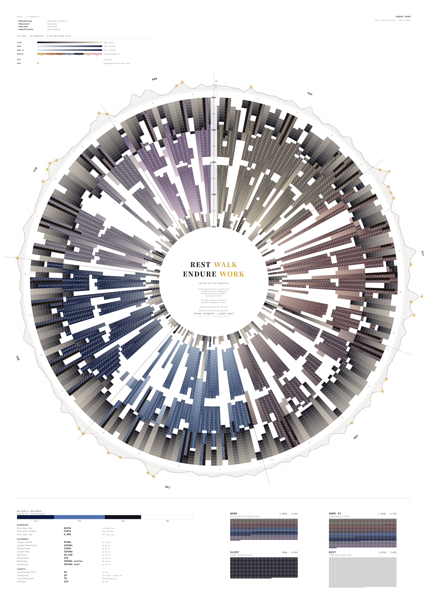
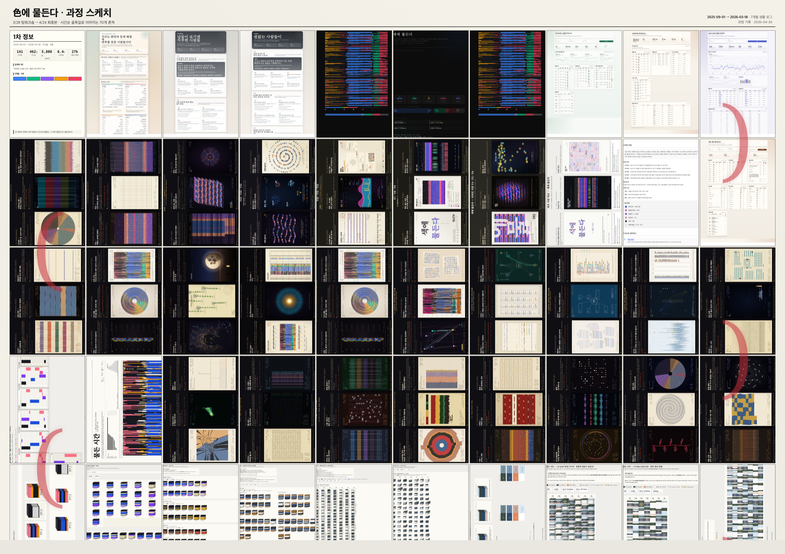

Info Design & Data Viz
Week 8
2026-04-25


Keywords: Assignment 1 final, A1 print, process sketch, Muldeun Sigan, personal data, radial calendar, information hierarchy, work-rest tension, critique, REST WALK ENDURE WORK
8주차는 이 과목의 첫 번째 개인 과제를 마무리하는 주차였다. 그동안 `phd/semester-1/정보디자인시스템/과제1` 폴더 안에서 데이터 정리, 정보 위계 분석, 컨셉 문서, 여러 포스터 러프, 최종 HTML과 PDF 출력까지 이어졌고, 마지막에는 바탕화면의 muldeun_sigan_A1_final을 A1 사이즈로 출력해 제출했다.
과제 1. 이 작업은 직접 기록된 수치 데이터를 바탕으로 한 정보디자인 포스터다. 단순히 예쁜 그래픽을 만드는 것이 아니라, 근태, 집 PC, 걸음수/수면, 브라우저/검색 기록을 연결해 한 사람의 시간이 어떻게 일, 쉼, 이동, 회복 사이에서 재조직되는지 보여주는 것이 목표였다.
1. 출발점은 7개월 생활 로그를 정보 구조로 바꾸는 일이었다
처음에는 데이터가 여러 곳에 흩어져 있었다. 출퇴근 근태, 집 PC 사용, 걸음수와 수면, 브라우저 이벤트와 검색 기록이 각각 다른 형식으로 남아 있었다. 과제의 핵심은 이 데이터를 모두 같은 형식으로 합치는 것이 아니라, 어떤 질문을 중심으로 어떤 데이터가 1차 정보가 되는지 정하는 일이었다.
| 데이터 | 기간 / 규모 | 포스터에서 맡은 역할 |
|---|---|---|
| 출퇴근 근태 | 2025-09-01 ~ 2026-03-18, 130 출근일 | 제도적 업무 시간과 WORK의 뼈대 |
| 집 PC 사용 | 165일, 201 세션 | 퇴근 이후 이어지는 HOME PC / 두 번째 시프트 |
| 걸음수 + 수면 | 매일 기록 | 몸의 비용, 회복, REST와 WALK의 근거 |
| 브라우저 / 검색 기록 | 최근 3개월, 약 27,000 이벤트 | 휴식처럼 보이는 시간 안의 탐색, 관리, 돌봄, 자기관리 흔적 |
이 데이터는 처음부터 포스터 형태를 가지고 있지 않았다. 분석 문서와 표, 픽셀 데이터, HTML 러프를 지나면서 점점 "시간을 어떻게 읽게 할 것인가"라는 질문으로 압축되었다.
2. 핵심 인사이트는 쉼이 아니라 전환이었다
처음에는 쉬는 시간, 걷는 시간, 일하는 시간을 각각 분리해서 보여줄 수 있다고 생각했다. 하지만 분석을 진행하면서 더 강한 메시지가 드러났다. 제도적으로 시간이 비어 보이는 날에도 실제로는 집 PC와 검색, 학습, 관리, 돌봄이 이어졌고, 특히 금요일은 짧게 일하는 날이 아니라 비공식 디지털 노동으로 전환되는 날에 가까웠다.
| 분석에서 나온 finding | 정보디자인에서의 의미 | 최종 포스터로 옮긴 방식 |
|---|---|---|
| 금요일은 쉬는 날보다 두 번째 디지털 시프트에 가깝다 | 제도적 근무시간만 보면 실제 시간을 오해한다 | WORK와 HOME PC를 별도 레이어로 두고, 겹침과 길이를 보이게 했다 |
| 1월은 가장 압축된 달이었다 | 집 PC는 길고 걸음수는 낮은, 화면 기반 압축의 달이었다 | 월별 방사 구조 안에서 계절과 활동 밀도의 차이를 보이게 했다 |
| 고-PC일은 저이동형과 고이동형으로 나뉜다 | 같은 PC 사용량도 몸의 리듬이 다르면 다른 삶이다 | WALK와 HOME PC를 분리해 움직임과 화면 시간을 동시에 읽게 했다 |
| 검색은 휴식보다 관리와 전환의 흔적을 많이 남긴다 | 브라우저는 소비 기록이 아니라 다음 행동의 인터페이스다 | REST / HEAL / WORK의 해석 레이어로 연결했다 |
-> 공식 근무 / 집 PC / 수면 / 걸음 / 검색 기록의 관계
-> "쉼이 생긴다"가 아니라 "시간이 다른 노동과 관리로 전환된다"
-> 물든 시간이라는 A1 데이터 초상
3. 스케치 과정은 데이터 정확성과 포스터성 사이를 오가는 과정이었다
이번 작업은 한 번에 최종 형태가 나온 것이 아니었다. 처음에는 표와 대시보드에 가까운 분석 화면에서 출발했고, 그 다음에는 30분 단위 픽셀 그리드, 다섯 역할의 색상, 제목을 데이터 그릇으로 쓰는 타이포그래픽 초상, 월별/주간/방사형 배열, 최종 A1 조판까지 여러 스케치를 통과했다.
| 단계 | 스케치의 질문 | 남은 것 / 버린 것 |
|---|---|---|
| 1차 정보 정리 | 어떤 수치가 원료이고, 무엇이 1차 정보인가? | 근태, 집 PC, 수면/걸음, 검색 기록을 핵심 데이터로 남겼다 |
| 픽셀 그리드 | 30분 단위 시간 조각을 정확히 보일 수 있는가? | 데이터 정확성은 좋았지만 포스터로는 다소 보고서처럼 보였다 |
| 타이포그래픽 초상 | 제목과 데이터가 하나의 이미지가 될 수 있는가? | 컨셉은 좋았지만 시간 나열이 일부 숨는 문제가 있었다 |
| 방사형 달력 | 계절과 시간의 순환을 한눈에 묶을 수 있는가? | 최종 A1 포스터의 중심 구조로 선택했다 |
| A1 최종 조판 | 멀리서는 초상, 가까이서는 데이터로 읽히는가? | muldeun_sigan_A1_final로 출력해 제출했다 |
스케치만 따로 출력해 제출하려고 준비했던 보드는 이 과정을 한 장으로 압축한 것이다. 여러 러프가 단순한 실패작이 아니라, 무엇을 유지하고 무엇을 버릴지 판단하게 만든 정보디자인의 사고 과정이었다.
4. 최종 포스터는 REST, WALK, ENDURE, WORK의 관계로 닫혔다
최종 포스터의 중심에는 REST WALK / ENDURE WORK라는 문장이 놓였다. 이 문장은 쉬고, 걷고, 견디고, 일한다는 네 단어를 통해 전체 데이터를 하나의 태도로 묶는다. 주변의 방사형 데이터는 월별, 날짜별, 시간대별 기록이고, 중앙의 문장은 그 기록을 해석하는 제목이자 결론이다.
멀리서
A1 크기에서는 먼저 큰 원형 구조와 계절별 색감, 중앙 문장이 보인다. 포스터는 대시보드가 아니라 하나의 시간 초상으로 시작한다.
가까이서
수면, 업무, 집 PC, 걸음, 휴식, 회복의 작은 칸과 범례가 읽히기 시작한다. 감성적 첫인상 뒤에 실제 수치 구조가 따라온다.
이 구조가 잘 된 점은 정보의 거리를 나누었다는 것이다. 멀리서는 인상이 먼저 오고, 가까이서는 데이터가 읽히며, 다시 중앙 문장으로 돌아왔을 때 "내 시간이 무엇으로 물들었는가"라는 질문으로 닫힌다.
5. 발표 피드백은 제목 위계와 스트레스 표현에 집중되었다
수업 피드백에서 가장 구체적으로 남은 부분은 중앙 문장의 위계였다. REST WALK <<< ENDURE WORK의 관계라면, REST와 WALK는 조금 더 작게 두고, ENDURE와 WORK는 더 강하게 보여도 된다는 피드백을 받았다. 특히 WORK에는 스트레스 스크래치 표현을 같이 넣고, 가을, 겨울, 봄의 색채를 WORK 안에 더 자연스럽게 넣으면 본문 데이터와 중앙 문장이 더 잘 이어졌을 것이라는 의견이었다.
| 피드백 지점 | 받은 의견 | 내가 동의한 이유 |
|---|---|---|
| REST / WALK | 폰트 크기를 조금 줄여도 된다 | 실제 데이터의 중심은 쉬는 시간보다 견디고 일하는 시간에 더 가까웠다 |
| ENDURE / WORK | 더 강한 시각적 무게가 필요하다 | 이 두 단어가 포스터의 긴장과 결론을 더 정확히 잡아준다 |
| 스트레스 스크래치 | WORK 안에 스크래치 표현을 넣으면 좋겠다 | 업무 시간이 단순한 색 면이 아니라 마찰과 압력으로 읽힐 수 있다 |
| 계절 색채 | 가을, 겨울, 봄의 색을 WORK와 더 연결한다 | 방사형 본문과 중앙 타이포그래피의 관계가 더 자연스러워진다 |
나도 이 피드백에 동의한다. 최종본은 제출물로서 마무리되었지만, 만약 한 번 더 고친다면 중앙 타이포그래피가 본문 데이터의 계절감과 노동의 압력을 더 직접적으로 받아내도록 수정했을 것이다.
6. 정보디자인 관점에서 잘 된 점
이번 작업에서 가장 의미 있었던 점은 데이터가 실제로 존재한다는 사실과, 그 데이터가 포스터 안에서 여러 거리로 읽힌다는 점이었다. 대략적인 감정만으로 만든 포스터가 아니라, 근태, PC 사용, 수면, 걸음, 검색 기록이 실제 수치로 연결되어 있었고, 그 위에서 색과 형태와 타이포그래피가 해석을 만들었다.
| 관점 | 잘 된 점 | 이유 |
|---|---|---|
| 데이터 정확성 | 실제 생활 로그를 기반으로 했다 | 정보디자인의 신뢰가 감상보다 먼저 서기 때문이다 |
| 정보 위계 | REST / WALK / ENDURE / WORK라는 해석 문장으로 닫았다 | 원시 수치가 메시지로 바뀌는 지점이 생겼다 |
| 시각 시스템 | 방사형 달력, 계절 색, 작은 칸, 범례가 하나의 규칙으로 묶였다 | 각 요소가 따로 예쁜 장식이 아니라 같은 정보 구조를 지탱한다 |
| 매체성 | A1 인쇄를 통해 멀리 보기와 가까이 읽기가 동시에 가능했다 | 웹 화면에서는 느끼기 어려운 스케일과 밀도가 생겼다 |
7. A1로 뽑아보니 정말 많이 달랐다
개인적으로 가장 크게 배운 것은 인쇄 스케일이었다. 화면에서 볼 때는 괜찮아 보이던 간격, 색, 글자 크기, 선의 밀도가 A1으로 출력하면 완전히 다르게 느껴졌다. 멀리서 보이는 구조와 가까이서 읽히는 디테일이 동시에 살아야 하고, 작은 색 차이와 빈 공간도 훨씬 강하게 드러났다.
살면서 직접 포스터를 이렇게 수치 데이터 기반으로 만들고, 정확한 정보 데이터를 전달하는 작업으로 A1까지 출력해본 경험은 처음에 가까웠다. 이 과정을 통해 정보디자인은 단순히 데이터를 예쁘게 보이게 하는 일이 아니라, 데이터를 어떤 크기와 거리와 물성에서 읽히게 할지 끝까지 책임지는 작업이라는 것을 배웠다.
- 8주차는 과제 1의 최종 발표와 피드백이 있었던 주차다.
- 최종 제출물은 바탕화면의 muldeun_sigan_A1_final을 A1 사이즈로 출력한 포스터였다.
- 작업 과정은 데이터 정리, 정보 위계 분석, 픽셀 그리드, 타이포그래픽 초상, 방사형 달력, 최종 조판으로 이어졌다.
- 핵심 인사이트는 쉼이 생긴 것이 아니라 시간이 비공식 디지털 노동과 관리로 전환된다는 점이었다.
- 피드백은 REST/WALK보다 ENDURE/WORK를 더 강하게 하고, WORK에 스트레스 스크래치와 계절 색을 더 연결하라는 방향이었다.
- A1 인쇄를 통해 화면과 실제 물성 사이의 차이를 크게 배웠다.
Keywords: Assignment 1 final, A1 print, process sketch, Muldeun Sigan, personal data, radial calendar, information hierarchy, work-rest tension, critique, REST WALK ENDURE WORK
Week 8 closed the first individual assignment for the course. Across the `phd/semester-1/정보디자인시스템/과제1` folder, the project moved through data cleaning, information hierarchy analysis, concept writing, poster roughs, final HTML output, and PDF printing. The final file on the desktop, muldeun_sigan_A1_final, was printed at A1 size and submitted.
Assignment 1. This was an information design poster based on directly recorded numerical data. The goal was not to make an attractive graphic alone, but to connect attendance, home PC use, steps/sleep, and browser/search records into a visual explanation of how one person's time is reorganized among work, rest, movement, and recovery.
1. The Starting Point Was Turning Seven Months of Life Logs into Information Structure
The original data was scattered across different sources: attendance, home PC use, steps and sleep, browser events, and search records. The core assignment was not simply to merge everything into one table, but to decide which question makes a given dataset primary information.
| Dataset | Period / scale | Role in the poster |
|---|---|---|
| Attendance log | 2025-09-01 to 2026-03-18, 130 workdays | The institutional work-time skeleton of WORK |
| Home PC use | 165 days, 201 sessions | The after-work HOME PC layer and second digital shift |
| Steps + sleep | Daily records | The bodily cost, recovery, REST, and WALK evidence |
| Browser / search records | Recent three months, roughly 27,000 events | Traces of search, management, care, and self-management inside time that can look like rest |
The data did not begin as a poster. It passed through analysis documents, tables, pixel data, and HTML roughs before becoming compressed around the question: how should this time be read?
2. The Core Insight Was Not Rest, but Transition
At first, it seemed possible to show rest, walking, and work as separate categories. But the analysis revealed a stronger message. Even when institutional time appeared to be open, home PC use, search, learning, management, and care continued. Friday in particular was not simply a short workday; it behaved more like a transition into informal digital labor.
| Finding | Meaning for information design | How it entered the final poster |
|---|---|---|
| Friday is closer to a second digital shift than a rest day | Institutional work hours alone misrepresent actual time | WORK and HOME PC appear as separate layers with visible length and overlap |
| January was the most compressed month | Home PC time was high while movement was low, showing screen-based compression | Monthly radial structure makes seasonal and density differences visible |
| High-PC days split into low-movement and high-movement types | The same PC duration can describe different lives when bodily rhythm differs | WALK and HOME PC are separated so movement and screen time can be read together |
| Search records show management and transition more than rest | The browser is not only consumption; it is an interface for next actions | Connected to the interpretive layers of REST, HEAL, and WORK |
-> relations among official work / home PC / sleep / walking / search records
-> not "rest appears," but "time shifts into other labor and management"
-> an A1 data portrait called Muldeun Sigan
3. The Sketch Process Moved Between Data Accuracy and Poster Quality
The final form did not appear in one step. The project began closer to tables and dashboard screens, then moved through 30-minute pixel grids, five role colors, typographic portraits where the title became a data container, monthly and weekly arrangements, radial layouts, and finally A1 composition.
| Stage | Sketch question | What remained / what was dropped |
|---|---|---|
| Primary information | Which numbers are raw material, and what is primary information? | Attendance, home PC, sleep/steps, and search records remained as core data |
| Pixel grid | Can 30-minute time fragments be shown accurately? | Accuracy was strong, but it still felt too much like a report |
| Typographic portrait | Can title and data become one image? | The concept was strong, but parts of the time sequence became hidden |
| Radial calendar | Can season and time cycles be held together at a glance? | This became the central structure of the final A1 poster |
| A1 final composition | Can it read as a portrait from afar and as data up close? | It was printed and submitted as muldeun_sigan_A1_final |
The process sketch board prepared for separate submission compressed that sequence into one view. The roughs were not just failed outputs; they were the thinking trail that made it possible to decide what to keep and what to remove.
4. The Final Poster Closed Around REST, WALK, ENDURE, and WORK
The final poster placed REST WALK / ENDURE WORK at the center. The four words gather the data into one attitude: resting, walking, enduring, and working. The radial structure around it is the month-by-month, date-by-date, hour-by-hour record; the central line is both title and interpretation.
From Afar
At A1 scale, the circular structure, seasonal color, and central phrase appear first. The poster begins as a time portrait, not as a dashboard.
Up Close
Small units for sleep, work, home PC, walking, rest, and recovery become readable. The factual structure follows the emotional first impression.
What worked well was the separation of reading distances. The first impression comes from the whole, the data appears up close, and the viewer returns to the central phrase with the question: what has my time been colored by?
5. The Presentation Feedback Focused on Title Hierarchy and Stress Marks
The most concrete critique concerned the hierarchy of the central phrase. If the real relation is REST WALK <<< ENDURE WORK, then REST and WALK could be smaller, while ENDURE and WORK could carry stronger visual weight. The feedback also suggested adding stress-scratch marks to WORK and bringing autumn, winter, and spring color into WORK so that the center connects more naturally to the body of the poster.
| Feedback point | Comment received | Why I agree |
|---|---|---|
| REST / WALK | The font size could be reduced slightly | The actual data centered more on enduring and working than on resting |
| ENDURE / WORK | They need stronger visual weight | Those two words hold the tension and conclusion of the poster more precisely |
| Stress scratches | WORK could include scratch-like stress marks | Work time could then read as friction and pressure, not only as color fields |
| Seasonal color | Autumn, winter, and spring color could enter WORK | The radial body and central typography would connect more naturally |
I agree with this critique. The submitted version was the final assignment output, but if I revised it once more, I would make the center typography absorb more of the poster's seasonal color and labor pressure.
6. What Worked from an Information Design Perspective
The most meaningful part of the work was that the data actually existed, and that it could be read at several distances. This was not a poster made only from a general feeling. Attendance, PC use, sleep, steps, and search records were connected as actual numbers, and color, form, and typography built interpretation on top of them.
| Perspective | What worked | Why it matters |
|---|---|---|
| Data accuracy | It used real life logs | Information design needs trust before impression |
| Information hierarchy | It closed with the interpretive phrase REST / WALK / ENDURE / WORK | Raw numbers became a message |
| Visual system | The radial calendar, seasonal color, small units, and legend worked as one rule | Elements were not separate decorations; they supported the same information structure |
| Medium | A1 printing allowed both distant viewing and close reading | The poster gained scale and density that a web screen cannot easily reproduce |
7. Printing at A1 Changed the Work
The biggest personal lesson was print scale. Spacing, color, type size, and line density that looked acceptable on screen felt very different at A1. The long-distance structure and close-reading details both had to survive, and small color differences or empty spaces became much more visible.
This was one of my first experiences making a poster from precise numerical data and then printing it as an A1 information design object. The process taught me that information design is not just making data look good. It is taking responsibility for how data is read across size, distance, and material form.
- Week 8 was the final presentation and feedback week for Assignment 1.
- The submitted output was the A1 print of muldeun_sigan_A1_final from the desktop.
- The work moved through data cleaning, information hierarchy analysis, pixel grids, typographic portraits, radial calendars, and final composition.
- The core insight was not that rest appeared, but that time shifted into informal digital labor and management.
- The critique was to strengthen ENDURE/WORK over REST/WALK and connect WORK to stress scratches and seasonal color.
- A1 printing made the difference between screen composition and physical information design very clear.